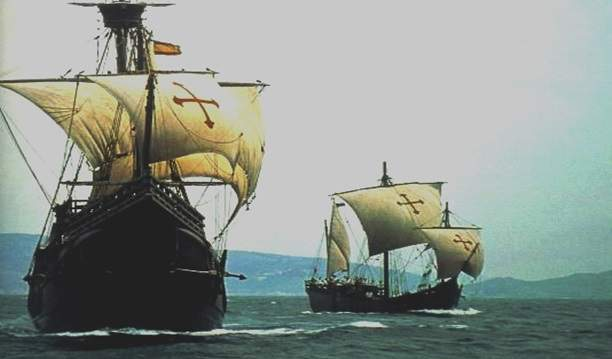

Veja
Navegações inglesas
Introdução
A participação da Inglaterra na expansão marítima europeia para novas terras ocorreu após as explorações empreendidas por Portugal e Espanha, que desde o século XV já haviam iniciado expedições no oceano Atlântico. Apesar da diferença de tempo, a colonização inglesa na América do Norte desempenhou um papel fundamental no desenvolvimento econômico tanto da Inglaterra quanto de suas colônias no norte do continente americano, conhecidas como as Treze Colônias.
Vários foram os elementos que contribuíram para o atraso dos ingleses no ingresso às grandes navegações. Política instável, resistência do feudalismo, monarquia centralizada e lideranças ligadas à burguesia são alguns dos fatores que temporariamente frearam a expansão dessas nações durante a era dos descobrimentos.
Especificamente na Inglaterra, ocorreram eventos que impactaram sua participação nas grandes navegações. Um desses eventos foi a exaustiva Guerra dos Cem Anos (1337-1453). Este conflito, que devastou tanto a França quanto a Inglaterra, acabou por atrasar a expansão marítima britânica. Além disso, a Guerra das Duas Rosas (1455-1485), uma série de conflitos dinásticos pelo trono da Inglaterra, também teve um papel importante.
Apesar de a Guerra dos Cem Anos ter sido travada principalmente em território francês, a Inglaterra sofreu consideráveis perdas de vidas durante a batalha. Após o término deste conflito, o país enfrentou uma disputa pelo trono inglês que culminou na Guerra das Duas Rosas, um conflito envolvendo as famílias Lancaster e York.
Em 1485, a tranquilidade prevalecia com o início do reinado de Henrique VII. Ele pertencia à dinastia Tudor e possuía laços familiares com as duas facções nobres que estavam em conflito. Sob o governo de Henrique VII, a Inglaterra embarcou definitivamente nas Grandes Navegações.
Apesar do domínio de Portugal e Espanha sobre as rotas marítimas que levavam à Índia pela costa da América e da África, os ingleses embarcaram em uma busca por um atalho pelo Nordeste.
Conquistas
A primeira tentativa de colonização da América do Norte pelos ingleses foi conduzida por Walter Raleigh, que organizou três expedições à região no final do século XVI. Contudo, as expedições não alcançaram o sucesso esperado devido aos contínuos ataques dos povos indígenas locais. Em torno de 1607, Raleigh conseguiu estabelecer uma colônia bem-sucedida na América do Norte: a Virgínia, nomeada em homenagem à solteira rainha Elizabeth I.
A intensificação do processo colonizador ocorreu apenas na segunda metade do século XVII, impulsionada por várias situações políticas e econômicas nas ilhas britânicas. Após a vitória sobre a Invencível Armada, a frota do rei espanhol Felipe II, comerciantes ingleses em conjunto com o Estado formaram companhias de comércio marítimo, destacando-se a Companhia das Índias Orientais, o que ampliou os contatos com as terras americanas. Além disso, a Coroa inglesa incentivou as atividades de pirataria no Atlântico.
Esse comércio recebeu um grande impulso com a aprovação, em 1651, dos Atos de Navegação, que determinavam que somente navios britânicos ou aqueles com mercadorias de origem da nacionalidade poderiam desembarcar em portos ingleses.
Paralelamente a esses desenvolvimentos econômicos, a Inglaterra enfrentava disputas políticas e questões sociais, especialmente relacionadas às sucessões dinásticas, perseguições religiosas e o despovoamento das áreas rurais.
A perseguição religiosa aos puritanos, calvinistas ingleses, especialmente após a criação do anglicanismo por Henrique VIII, impulsionou-os a migrar para a América, buscando estabelecer comunidades onde pudessem praticar livremente sua fé. Em 1620, a primeira expedição de puritanos chegou à América do Norte a bordo do navio Mayflower, aportando na região que hoje é conhecida como o estado de Massachusetts, onde fundaram o núcleo de colonização de Plymouth.
Além das disputas políticas e religiosas, que em momentos distintos levaram anglicanos e puritanos a emigrar para a América, houve também a expulsão de grande parte da população camponesa de suas terras, principalmente devido aos cercamentos. Esse processo, em que grandes proprietários cercavam as terras antes utilizadas pela população camponesa, resultou em um inchaço populacional nas áreas urbanas, incentivando parte da população a buscar novas oportunidades na América do Norte.
As trezes colônias
A religião puritana desempenhou um papel importante na colonização inglesa, pois defendia que o trabalho árduo poderia levar à graça divina e à salvação. Os preceitos religiosos dos puritanos contribuíram para consolidar uma ética do trabalho, promovendo a prosperidade dos colonos e estabelecendo um rigoroso código de conduta social.
Essa situação se tornou mais evidente na região norte das Treze Colônias, que ficou conhecida como Nova Inglaterra. Compreendendo as colônias de Massachusetts, Connecticut, Rhode Island e New Hampshire, essa área tinha um clima temperado semelhante ao da Inglaterra, o que favoreceu o desenvolvimento de atividades econômicas como pesca, pecuária, comércio e manufatura. A predominância de puritanos na região também influenciou a organização social, marcada por uma intolerância religiosa.
Em contrapartida, as colônias centrais, Nova Iorque, Delaware, Pensilvânia e Nova Jersey, demonstraram ser mais receptivas à chegada de grupos sociais com diferentes crenças. Além disso, a colonização dessas áreas contou com a presença de holandeses, suecos, escoceses e outros povos europeus. No aspecto econômico, as colônias centrais se aproximavam das suas vizinhas do norte, com destaque para a formação de um importante centro comercial na cidade de Filadélfia.
Ambas as regiões conheceram o desenvolvimento de uma economia autônoma em relação à metrópole, com ênfase no comércio e na manufatura, algo distinto das colônias do Sul.
O Sul das Treze Colônias, formado pelas colônias da Virgínia, Maryland, Carolina do Norte e Geórgia, era caracterizado pela produção agrícola em sistema de plantation: monocultura trabalhada por escravos em grandes propriedades destinadas à exportação para o mercado europeu. Essa região tinha uma lógica de povoamento diferente devido à dependência do trabalho escravo e à produção de tabaco, algodão, arroz e índigo (anil) para a Europa.
Apesar das diferenças entre essas colônias, além da origem comum da maioria da população, havia uma política de extermínio contra os povos indígenas da região. Apaches, sioux, comanches, cheyennes, iroqueses e esquimós foram expulsos de suas terras e exterminados pelos colonizadores europeus.
Ainda havia uma dependência em relação à metrópole inglesa, porém, essa dependência era significativamente diferente daquela observada nas colônias portuguesas e espanholas. Os conflitos políticos na metrópole inglesa dificultavam o controle rígido sobre as colônias americanas.
Entretanto, a partir do século XVIII, com o estabelecimento do desenvolvimento econômico capitalista e da estabilidade política na Inglaterra, a monarquia parlamentar buscou implementar uma nova política colonial, que aumentou as restrições econômicas e a tributação sobre os colonos. Esses foram os principais motivos que desencadearam as lutas de independência, iniciadas em 1776.
Navegadores de destaque
Navegadores que deixaram suas marcas na história enquanto buscavam a tão cobiçada terra das especiarias. Entre eles estavam Martin Frobisher, que explorou a Groenlândia; James Cook, que realizou três voltas ao redor da Terra; Walter Raleigh, que tentou sem sucesso estabelecer uma colônia na América do Norte; Francis Drake, que completou a segunda viagem de circunavegação após Fernão de Magalhães; e, por fim, João Caboto, um italiano a serviço dos ingleses, que chegou à Nova Escócia e à península de Labrador.
Conclusão
A expansão marítima foi de extrema importância para a Inglaterra, proporcionando expansão cultural, econômica e estabelecendo rotas comerciais com a América, África e Ásia. Ainda sobre economia, a indústria e a manufatura cresceram como resultado da exploração de matérias-primas. Também desempenhou um papel de importância no processo de fortalecimento do poder e da influência da monarquia inglesa. Assim como o incentivo direto e/ou indireto à exploração científica, inovações técnicas e levou o país a ser uma potência naval e militar de destaque.
{kind=link}